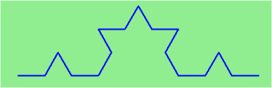
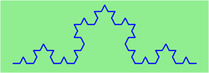
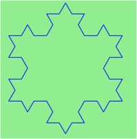
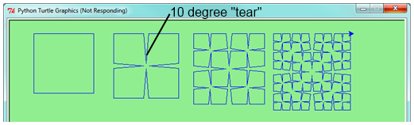
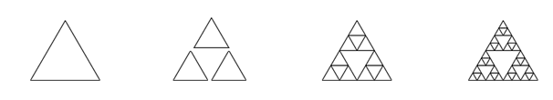
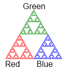

Recursion means “defining something in terms of itself” usually at some smaller scale, perhaps multiple times, to achieve your objective. For example, we might say “A human being is someone whose mother is a human being.”
For our purposes, a fractal is drawing which also has self-similar structure. Its structure can be defined in terms of itself.
Let us start by looking at the famous Koch fractal. An order 0 Koch fractal is simply a straight line of a given size.

An order 1 Koch fractal is obtained like this: instead of drawing just one line, draw instead four smaller segments, in the pattern shown here:
Now what would happen if we repeated this Koch pattern again on each of the order 1 segments? We’d get this order 2 Koch fractal:
Repeating our pattern again gets us an order 3 Koch fractal:
Now let us think about it the other way around. To draw a Koch fractal of order 3, we can simply draw four order 2 Koch fractals. But each of these in turn needs four order 1 Koch fractals, and each of those in turn needs four order 0 fractals. Ultimately, the only drawing that will take place is at order 0. This is very simple to code up in Python.
(chp12_koch)
Try running this program with different values for the order. For example, try order 0, then 1, then 2, and so on.
The key thing that is new here is that if order is not zero, koch calls itself four times to get the job done. This self-reference is the recursion.
Recursion, the high-level view
One way to think about this is to convince yourself that the function works correctly when you call it for an order 0 fractal. Then do a mental leap of faith, saying “the fairy godmother (or Python, if you can think of Python as your fairy godmother) knows how to handle the recursive level 0 calls for me on lines 12, 14, 16, and 18, so I don’t need to think about that detail!” All I need to focus on is how to draw an order 1 fractal if I can assume the order 0 one is already working.
You’re practicing mental abstraction — ignoring the subproblem while you solve the big problem.
If this mode of thinking works (and you should practice it!), then take it to the next level. Aha! now can I see that it will work when called for order 2 under the assumption that it is already working for level 1.
And, in general, if I can assume the order n-1 case works, can I just solve the level n problem?
Students of mathematics who have played with proofs of induction should see some very strong similarities here.
All of the Python data types we have seen can be grouped inside lists and tuples in a variety of ways. Lists and tuples can also be nested, providing a myriad possibilities for organizing data. The organization of data for the purpose of making it easier to use is called a data structure.
It’s election time and we are helping to compute the votes as they come in. Votes arriving from individual wards, precincts, municipalities, counties, and states are sometimes reported as a sum total of votes and sometimes as a list of subtotals of votes. After considering how best to store the tallies, we decide to use a nested number list, which we define as follows:
A nested number list is a list whose elements are either:
Notice that the term, nested number list is used in its own definition. Recursive definitions like this are quite common in mathematics and computer science. They provide a concise and powerful way to describe recursive data structures that are partially composed of smaller and simpler instances of themselves. The definition is not circular, since at some point we will reach a list that does not have any lists as elements.
Now suppose our job is to write a function that will sum all of the values in a nested number list. We would want to call such a function on a list where some of the items might be numbers and some of them might be lists of numbers.
Since the problem involves processing something that is recursively defined, it is likely that a recursive function might easily do the trick. But how do we design such a function?
The first thing you must do to write a recursive function is define the cases where you already know the answer. In the Koch fractal example, the order 0 case is easy. Just draw a straight line. We call such a case the base case. It is entirely possible that there can be many base cases in a recursive solution. However, in each case, we know what to do.
For this problem, the base case is also very simple. If the list has nothing in it, the sum of all the values must be 0. But what if the list is not empty? Then there must be a first item and if we take away the first item the rest must be a list with one fewer item than before.
If we already have a function that knows how to compute the sum of a list, we can use it to compute the sum of the rest of the list. The only problem we need to address is how to deal with the first item.
There are two possibilities. The first item could be a simple integer. If that is the case, we simply add it to the sum returned for the rest of the list. However, if the first item is itself a list, we will need to compute its sum (good news...we already have a function that knows how to do that) and then add that to the sum returned for the rest of the list.
Either case will call the function of a smaller part of the original list. This is known as the recursive call and must be made with a parameter value that is moving toward becoming the base case. The complete function is shown below.
(chp11_recursivesum)
Note that three different calls are made to test the function. In the first, list is empty. This will test the base case. In the second, the list has no nesting. The third requires that all parts of the recursion are working. Try them and then make modifications to the lists to add deeper nesting. You might even want to try:
print(rSum([[[[[[[[[[]]]]]]]]]]))
def swap(x, y): # incorrect version
print("before swap statement: id(x):", id(x), "id(y):", id(y))
x, y = y, x
print "after swap statement: id(x):", id(x), "id(y):", id(y))
(a, b) = (0, 1)
print( "before swap function call: id(a):", id(a), "id(b):", id(b)
swap(a, b)
print("after swap function call: id(a):", id(a), "id(b):", id(b))
Run this program and describe the results. Use the results to explain why this version of swap does not work as intended. What will be the values of a and b after the call to swap?
Modify the Koch fractal program so that it draws a Koch snowflake, like this:
Draw a Cesaro torn square fractal, of the order given by the user. A torn square consists of four torn lines. We show four different squares of orders 0,1,2,3. In this example, the angle of the tear is 10 degrees. Varying the angle gives interesting effects — experiment a bit, or perhaps let the user input the angle of the tear.
A Sierpinski triangle of order 0 is an equilateral triangle. An order 1 triangle can be drawn by drawing 3 smaller triangles (shown slightly disconnected here, just to help our understanding). Higher order 2 and 3 triangles are also shown. Adapt the Koch snowflake program to draw Sierpinski triangles of any order input by the user.
Adapt the above program to draw its three major sub-triangles in different colours, as shown here in this order 4 case:
Create a module named seqtools.py. Add the functions encapsulate and insert_in_middle from the chapter. Add tests which test that these two functions work as intended with all three sequence types.
Add each of the following functions to seqtools.py:
def make_empty(seq): pass
def insert_at_end(val, seq): pass
def insert_in_front(val, seq): pass
def index_of(val, seq, start=0): pass
def remove_at(index, seq): pass
def remove_val(val, seq): pass
def remove_all(val, seq): pass
def count(val, seq): pass
def reverse(seq): pass
def sort_sequence(seq): pass
def testsuite():
test(make_empty([1, 2, 3, 4]), [])
test(make_empty(('a', 'b', 'c')), ())
test(make_empty("No, not me!"), '')
test(insert_at_end(5, [1, 3, 4, 6]), [1, 3, 4, 6, 5])
test(insert_at_end('x', 'abc'), 'abcx')
test(insert_at_end(5, (1, 3, 4, 6)), (1, 3, 4, 6, 5))
test(insert_in_front(5, [1, 3, 4, 6]), [5, 1, 3, 4, 6])
test(insert_in_front(5, (1, 3, 4, 6)), (5, 1, 3, 4, 6))
test(insert_in_front('x', 'abc'), 'xabc')
test(index_of(9, [1, 7, 11, 9, 10]), 3)
test(index_of(5, (1, 2, 4, 5, 6, 10, 5, 5)), 3)
test(index_of(5, (1, 2, 4, 5, 6, 10, 5, 5), 4), 6)
test(index_of('y', 'happy birthday'), 4)
test(ndex_of('banana', ['apple', 'banana', 'cherry', 'date']), 1)
test(index_of(5, [2, 3, 4]), -1)
test(index_of('b', ['apple', 'banana', 'cherry', 'date']), -1)
test(remove_at(3, [1, 7, 11, 9, 10]), [1, 7, 11, 10])
test(remove_at(5, (1, 4, 6, 7, 0, 9, 3, 5)), (1, 4, 6, 7, 0, 3, 5))
test(remove_at(2, "Yomrktown"), 'Yorktown')
test(remove_val(11, [1, 7, 11, 9, 10]), [1, 7, 9, 10])
test(remove_val(15, (1, 15, 11, 4, 9)), (1, 11, 4, 9))
test(remove_val('what', ('who', 'what', 'when', 'where', 'why', 'how')),
('who', 'when', 'where', 'why', 'how'))
test(remove_all(11, [1, 7, 11, 9, 11, 10, 2, 11]), [1, 7, 9, 10, 2])
test(remove_all('i', 'Mississippi'), 'Msssspp')
test(count(5, (1, 5, 3, 7, 5, 8, 5)), 3)
test(count('s', 'Mississippi'), 4)
test(count((1, 2), [1, 5, (1, 2), 7, (1, 2), 8, 5]), 2)
test(reverse([1, 2, 3, 4, 5]), [5, 4, 3, 2, 1])
test(reverse(('shoe', 'my', 'buckle', 2, 1)), (1, 2, 'buckle', 'my', 'shoe'))
test(reverse('Python'), 'nohtyP')
test(sort_sequence([3, 4, 6, 7, 8, 2]), [2, 3, 4, 6, 7, 8])
test(sort_sequence((3, 4, 6, 7, 8, 2)), (2, 3, 4, 6, 7, 8))
test(sort_sequence("nothappy"), 'ahnoppty')
As usual, work on each of these one at a time until they pass all the tests.
But do you really want to do this?
Disclaimer. These exercises illustrate nicely that the sequence abstraction is general, (because slicing, indexing, and concatenation is so general), so it is possible to write general functions that work over all sequence types. Nice lesson about generalization!
Another view is that tuples are different from lists and strings precisely because you want to think about them very differently. It usually doesn’t make sense to sort the fields of the julia tuple we saw earlier, or to cut bits out or insert bits into the middle, even if Python lets you do so! Tuple fields get their meaning from their position in the tuple. Don’t mess with that.
Use lists for “many things of the same type”, like an enrollment of many students for a course.
Use tuples for “fields of different types that make up a compound record”.
Write a function, recursive_min, that returns the smallest value in a nested number list. Assume there are no empty lists or sublists:
test(recursive_min([2, 9, [1, 13], 8, 6]), 1)
test(recursive_min([2, [[100, 1], 90], [10, 13], 8, 6]), 1)
test(recursive_min([2, [[13, -7], 90], [1, 100], 8, 6]), -7)
test(recursive_min([[[-13, 7], 90], 2, [1, 100], 8, 6]), 13)
Write a function count that returns the number of occurences of target in a nested list:
test(count(2, []), 0)
test(count(2, [2, 9, [2, 1, 13, 2], 8, [2, 6]]), 4)
test(count(7, [[9, [7, 1, 13, 2], 8], [7, 6]]), 2)
test(count(15, [[9, [7, 1, 13, 2], 8], [2, 6]]), 0)
test(count(5, [[5, [5, [1, 5], 5], 5], [5, 6]]), 6)
test(count('a', [['this', ['a', ['thing', 'a'], 'a'], 'is'], ['a', 'easy']]), 5)
Write a function flatten that returns a simple list containing all the values in a nested list:
test(flatten([2, 9, [2, 1, 13, 2], 8, [2, 6]]), [2, 9, 2, 1, 13, 2, 8, 2, 6])
test(flatten([[9, [7, 1, 13, 2], 8], [7, 6]]), [9, 7, 1, 13, 2, 8, 7, 6])
test(flatten([[9, [7, 1, 13, 2], 8], [2, 6]]), [9, 7, 1, 13, 2, 8, 2, 6])
test(flatten([['this', ['a', ['thing'], 'a'], 'is'], ['a', 'easy']]),
['this', 'a', 'thing', 'a', 'is', 'a', 'easy'])
test(flatten([]), [])
Rewrite the fibonacci algorithm without using recursion. Can you find bigger terms of the sequence? Can you find fib(200)?
Write a function named readposint that uses the input dialog to prompt the user for a positive integer and then checks the input to confirm that it meets the requirements. It should be able to handle inputs that cannot be converted to int, as well as negative ints, and edge cases (e.g. when the user closes the dialog, or does not enter anything at all.)
Use help to find out what sys.getrecursionlimit() and sys.setrecursionlimit(n) do. Create several experiments similar to what was done in infinite_recursion.py to test your understanding of how these module functions work.
Write a program that walks a directory structure (as in the last section of this chapter), but instead of printing filenames, it returns a list of all the full paths of files in the directory or the subdirectories. (Don’t include directories in this list — just files.) For example, the output list might have elements like this:
['C:\Python31\Lib\site-packages\pygame\docs\ref\mask.html',
'C:\Python31\Lib\site-packages\pygame\docs\ref\midi.html',
...
'C:\Python31\Lib\site-packages\pygame\examples\aliens.py',
...
'C:\Python31\Lib\site-packages\pygame\examples\data\boom.wav',
... ]
Write a program named litter.py that creates an empty file named trash.txt in each subdirectory of a directory tree given the root of the tree as an argument (or the current directory as a default). Now write a program named cleanup.py that removes all these files. Hint: Use the program from the example in the last section of this chapter as a basis for these two recursive programs. Because you’re going to destroy files on your disks, you better get this right, or you risk losing files you care about. So excellent advice is that initially you should fake the deletion of the files — just print the full path names of each file that you intent to delete. Once you’re happy that your logic is correct, and you can see that you’re not deleting the wrong things, you can replace the print statement with the real thing.